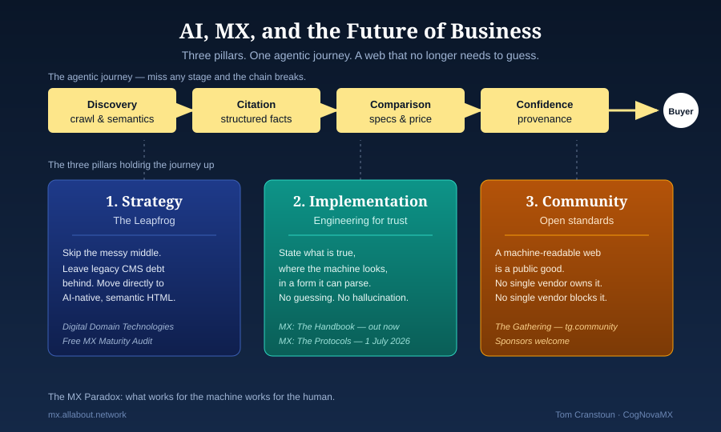

AI, MX, and the Future of Business

Two years ago I wrote a piece for CMS Critic, A CMS Consultant's Takeaways from CMS Kickoff 2024, in which I named a coming AI tipping point. The conversation back then was still about if AI would change content. Today the question has shifted to how we survive a web that is no longer consumed only by people.
The tipping point arrived
The invisible users are here. AI agents are visiting your site right now, interpreting it, comparing it, acting on it. If they fail to understand what you do, they do not send an angry email. They simply route around you. Permanently.
To meet that challenge I am formalising the discipline of Machine Experience (MX) through three pillars: strategy, implementation, and community. Each pillar exists because the others, on their own, are not enough. Strategy without implementation is a slide deck. Implementation without standards is a silo. Standards without strategy never get adopted.
1. The leapfrog strategy
Digital transformation is no longer a linear climb. Through my work at Digital Domain Technologies, I help enterprises leapfrog the messy middle of legacy CMS debt.
The pattern is the same one emerging markets used when they skipped landlines and went straight to mobile. Smart organisations are skipping a generation of fragile, JavaScript-heavy "blob" architectures and moving directly to AI-native delivery, semantic, machine-readable HTML where the meaning is in the markup, not buried in a render pipeline.
The expensive replatform is no longer the prize. The prize is being legible to the agents that buyers now use to find, compare, and recommend.
2. The agentic journey: engineering for trust
We are no longer designing only for clicks and scrolls. We are designing for computational trust. When an AI agent visits your site, it moves through a specific, high-stakes journey. Miss any stage and the chain breaks:
- Discovery. Can the agent find the raw data without executing complex scripts?
- Citation. Is the information structured so the agent can quote it reliably and attribute it back to you?
- Comparison. Can your specifications be weighed against a competitor without the agent guessing units, currency, or scope?
- Confidence. Does the metadata provide the proof, provenance, freshness, authorship, needed to recommend a purchase?
None of this is exotic. It is the discipline of stating what is true, in the place a machine will look for it, in a form a machine can parse. The agent should never have to think. When it does, it hallucinates, and the hallucination becomes the brand.
The MX paradox
What works for the machine works for the human. By designing for AI agents, you inherently solve for accessibility, reduce cognitive load, and improve the experience for every visitor. A page that is legible to a hundred-million-parameter local model is also legible to a screen reader, a translator, a search index, and a tired human on a train.
Established standards come first, semantic HTML, WCAG, Schema.org, Open Graph. MX adds the governance and lifecycle metadata they leave out. A well-built MX page is, by construction, a well-built SEO page and a well-built accessible page. The patterns compound.
3. MX: The Handbook and The Protocols
I have split the framework so it serves both the boardroom and the server room.
- MX: The Handbook, the strategic why. Available now. Written for leadership teams building the next generation of enterprise digital platforms. The throughline is sales compression: shortening the distance between a brand and a buyer when an agent sits between them.
- MX: The Protocols, the technical how. Publishing 1 July 2026. Formal specifications and semantic patterns for building a resilient, agent-ready infrastructure that survives the next five years of model churn.
If you are responsible for the decision, read the Handbook. If you are responsible for the build, you will want both.
4. The Gathering: open standards for a new web
MX is too important to be locked inside any one vendor's silo, including mine. That is why I founded The Gathering.
The Gathering is an independent, community-governed standards body developing the open standards that let content be understood consistently by both people and machines. The model is deliberately W3C-shaped: open drafts, open review, no single owner.
We are looking for sponsors. An industry-led body needs partners who recognise that a machine-readable web is a public good. Sponsoring The Gathering puts your organisation's voice in the foundation of the agentic web, not as a customer of someone else's protocol, but as a co-author of the one everyone uses.
Partner with Digital Domain Technologies
Is your site agent-ready, or is it a legacy blob? To help you find out, Digital Domain Technologies offers two levels of assessment:
- The Free MX Maturity Audit. A complimentary review of any five pages from your site to see whether agents can perceive your value proposition at all.
- In-depth Architectural Audit. A full roadmap to leapfrog the competition, including team training and fractional leadership through the transition.
The 2024 kickoff was the warning shot. The era of "wait and see" is over. The era of the protocol has begun.
Get MX: The Handbook today, join or sponsor the community at The Gathering, and visit Digital Domain Technologies to claim your free audit.